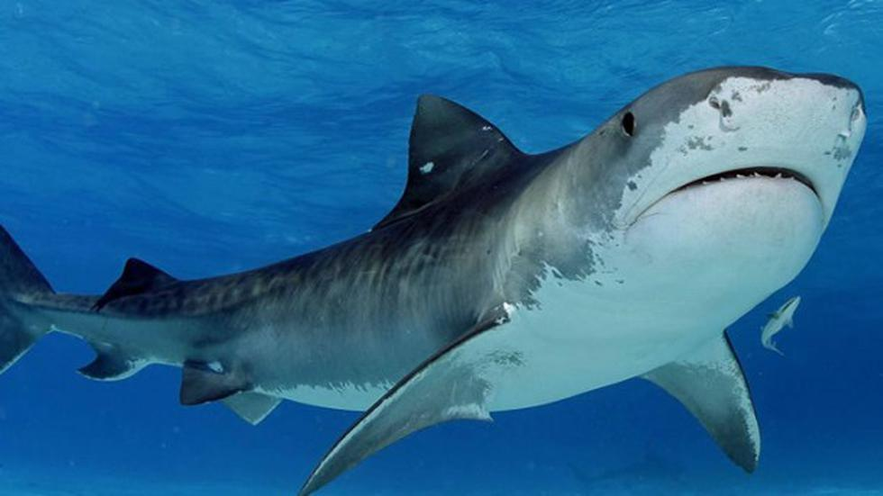
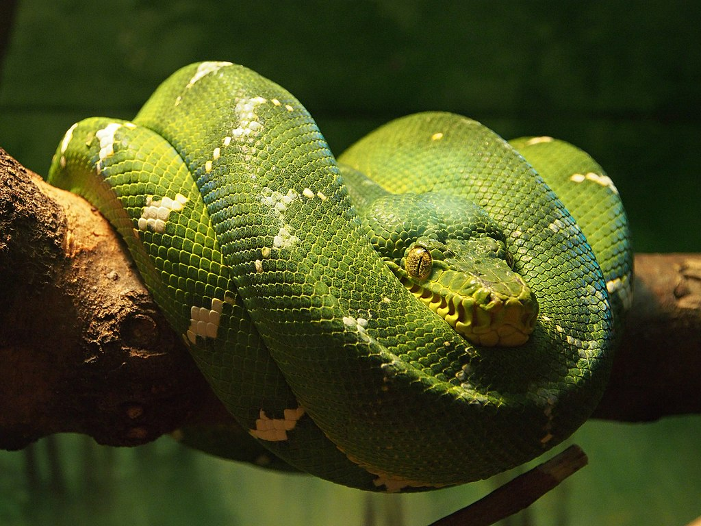
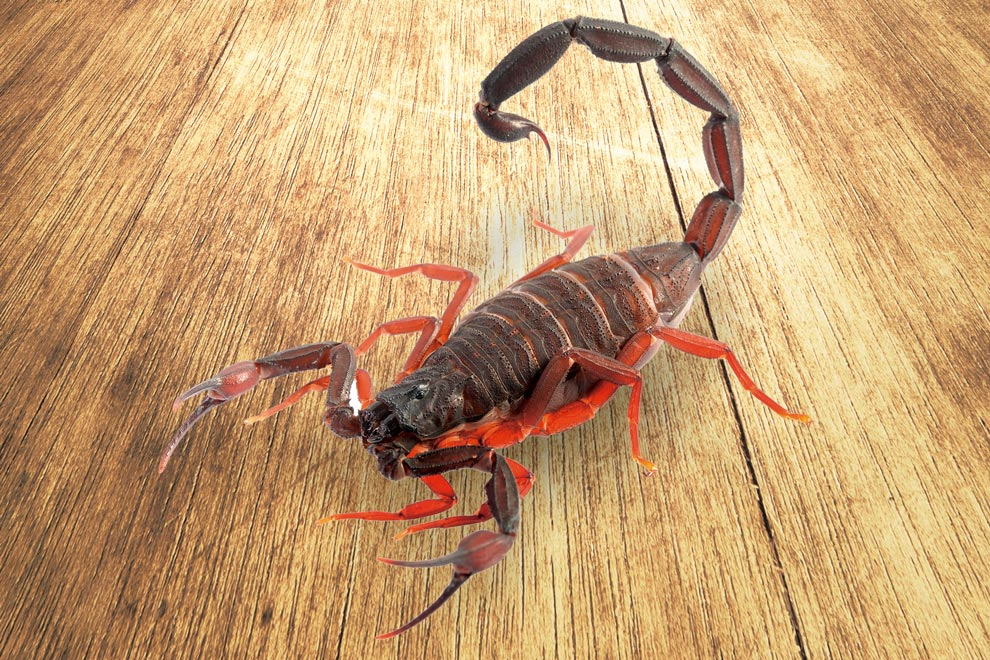
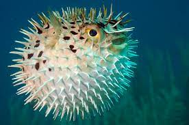
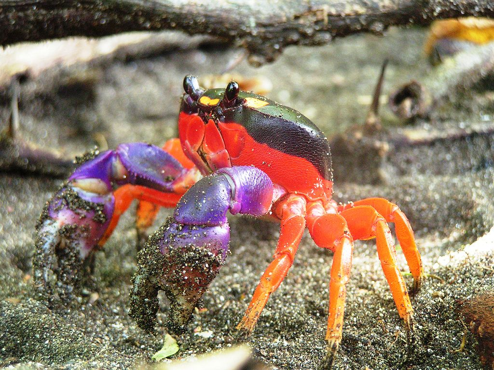

| Nombre | Descripcion | Foto |
|---|---|---|
| Tiburon | Los selacimorfos (Selachimorpha, del griego selachos, tiburón y morphé, forma) o pleurotremados (Pleurotremata, por tener las hendiduras branquiales en los laterales del cuerpo) son un superorden de condrictios (peces cartilaginosos) conocidos vulgarmente con el nombre de tiburones, o también llamados escualos. Se caracterizan por ser grandes depredadores. Los tiburones incluyen desde especies pequeñas de las profundidades marinas, hasta el tiburón ballena, el mayor de los peces, el cual se cree puede llegar a medir una longitud de 18 m y se alimenta únicamente de plancton. El tiburón toro puede desplazarse a agua dulce y algunos ataques de tiburones han ocurrido en ríos. Algunas de las especies mayores, en especial el tiburón mako y el tiburón blanco, son endotermos parciales, capaces de mantener parcialmente su temperatura corporal por encima de la que se encuentra el medio acuático en el que viven. |
 |
| Serpiente | Las serpientes (Serpentes) u ofidios (Ophidia) son un suborden de saurópsidos (reptiles) diápsidos pertenecientes al orden Squamata, del superorden Lepidosauria, caracterizado por la ausencia de patas (la pitón mantiene diminutas extremidades vestigiales, herencia de su pasado evolutivo)1 y el cuerpo muy alargado. Se originaron en el período Cretácico. Algunas realizan mordeduras venenosas, como las cobras y las víboras, para matar a sus presas y posteriormente ingerirlas. Otras serpientes, como las boas y pitones, matan a sus presas por constricción. Se reconocen más de 450 géneros y de 3460 especies.23 Se cree que las serpientes derivan de algún tipo de lagarto, pero los detalles concretos de su origen no están claros. |
 |
| Scorpion | Scorpiones es un orden de artrópodos arácnidos depredadores conocidos comúnmente como escorpiones o alacranes. Se caracterizan por contar con un par de pinzas de agarre y una cola estrecha y segmentada, a menudo formando una reconocible curva hacia delante sobre la espalda y siempre rematada con un aguijón. La historia evolutiva de los escorpiones se remonta a hace unos cuatrocientos treinta y cinco millones de años, durante el Silúrico. Viven sobre todo en los desiertos, pero se han adaptado a una amplia gama de condiciones ambientales y se encuentran en todos los continentes, excepto en la Antártida. Se han descrito más de dos mil quinientas especies, divididas en veintidós familias existentes. Su taxonomía se encuentra en proceso de revisión para tener en cuenta los estudios genómicos del siglo XXI. |
 |
| Pez Globo | Los biólogos creen que el pez globo desarrolló su famosa habilidad para inflarse debido a que su estilo para nadar es lento y torpe. Eso los hace vulnerables frente a los depredadores. En lugar de escapar, el pez globo utilizar su elástico estómago muy elástica y su capacidad de ingerir rápidamente grandes cantidades de agua (e incluso de aire si es necesario) para que se convierta en una bola prácticamente increíble que dobla varias veces su tamaño normal. Algunas especies también tienen espinas en la piel para evitar ser comidas. |
 |
| Cangrejo | Se llama cangrejos a diversos crustáceos del orden de los decápodos. Este orden, caracterizado por tener cinco pares de patas, de los cuales dos suelen ser sus pinzas, incluye a los crustáceos de mayor tamaño, como langostas, gambas y camarones, además de las diversas formas que se llaman cangrejos. |
 |